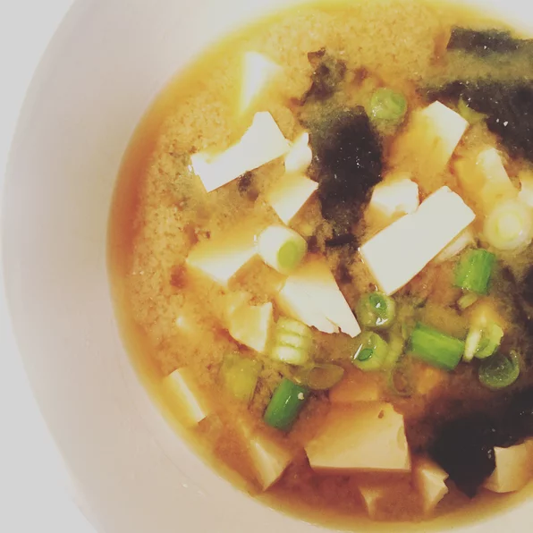

Miso soup is an excellent side to any meal!
Dashi is a basic stock used in Japanese cooking which is made by boiling dried kelp (seaweed) and dried bonito (fish). Instant dashi granules are sold in conveniently-sized jars or packets and vary in strength. Add more dashi to your soup if you want a stronger stock. You can use yellow, white or red miso paste for this soup. Yellow miso is sweet and creamy, red miso is stronger and saltier.